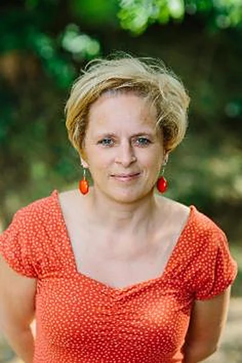
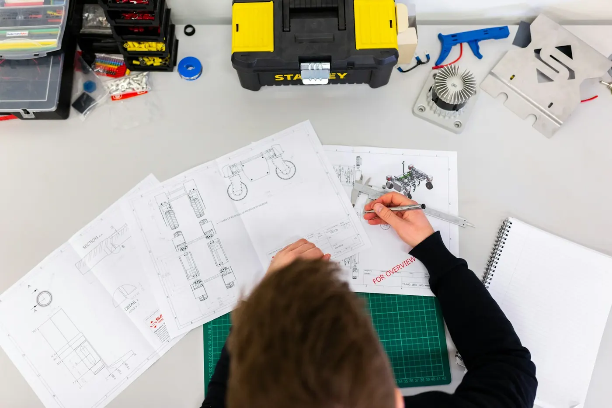
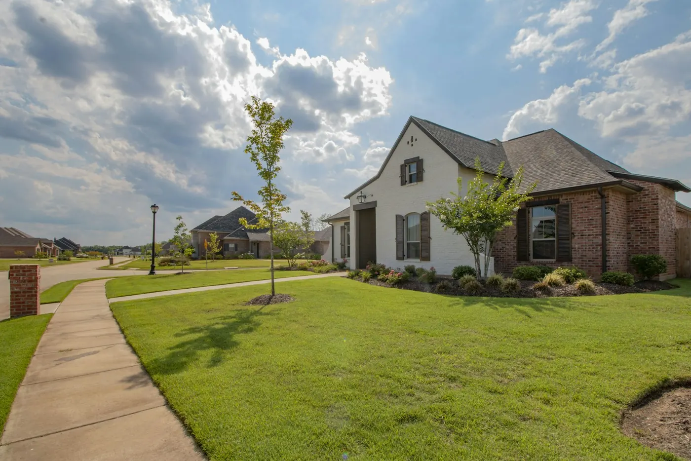
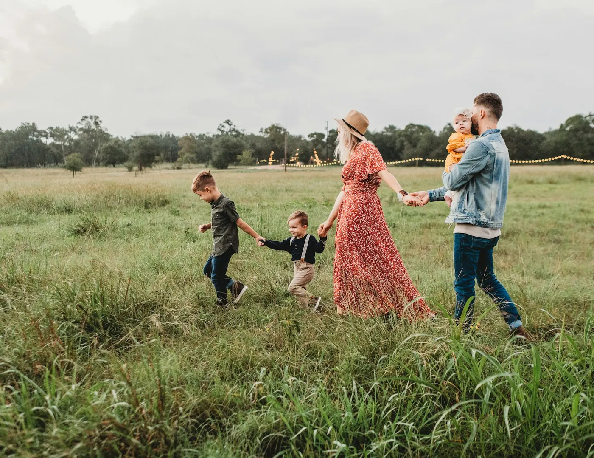
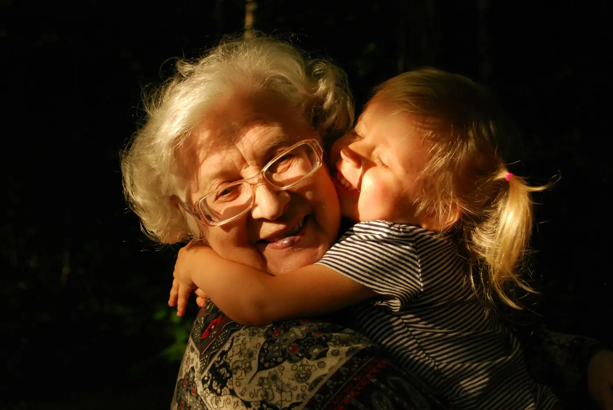
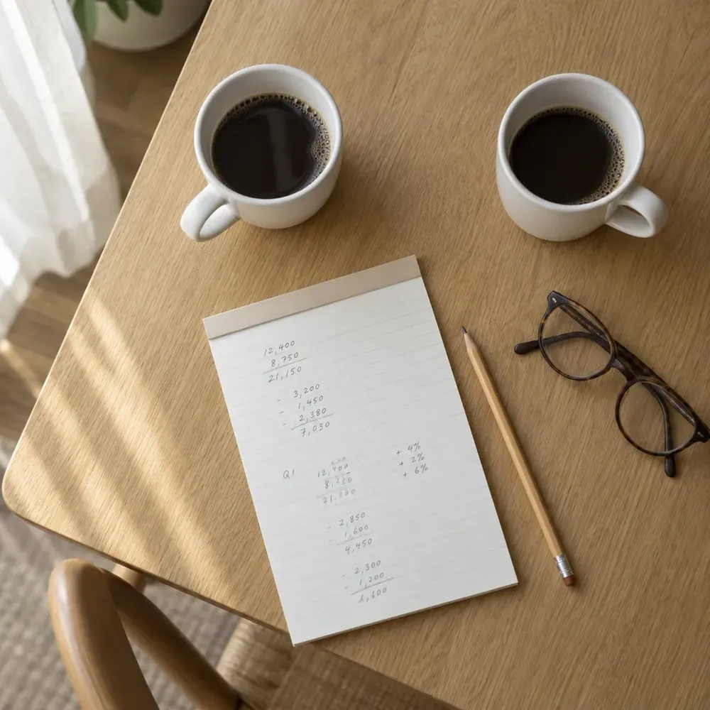
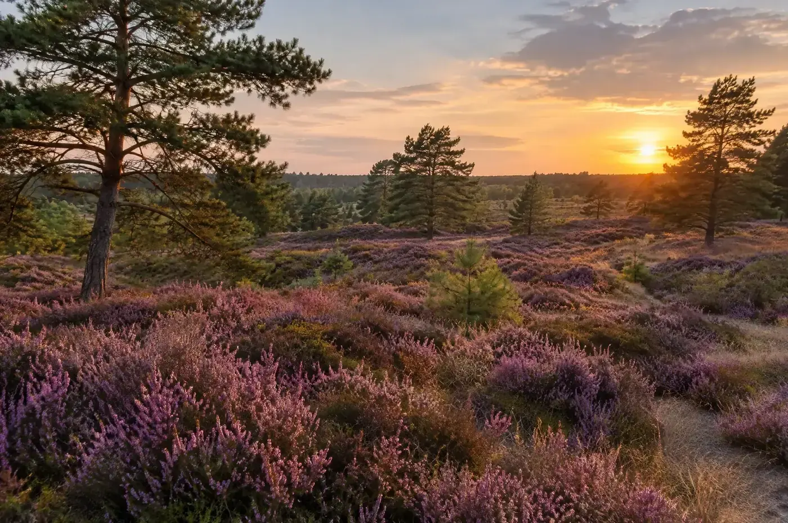

Ik bouw liever een brug dan een rechtszaak.
Ik ben Dewi Draulans. Ik help particulieren, handelaars en kleine kmo's als het thuis, op de werf of in de zaak scheef loopt. Eerst kijken we samen of het in der minne kan. Lukt dat niet, dan pleit ik uw zaak zelf.

Waar mensen uit de streek mee aankloppen.
Klik op wat bij u past. Dan staat het onderwerp al klaar in het contactformulier en weet ik waarover we het hebben.

AannemingBouwen en verbouwen
Een aannemer die niet afwerkt, gebreken na de oplevering of een factuur die niet klopt. We kijken naar uw contract en naar wat er intussen gezegd en geschreven is.
Vraag hierover een afspraak
GoederenrechtBuren en eigendom
Een haag over de grens, een gemene muur, een afpaling of een erfdienstbaarheid. Met een goed gesprek raakt veel opgelost voor het escaleert.
Vraag hierover een afspraak
FamilieScheiden of uit elkaar
Echtscheiding, het einde van het samenwonen of de verdeling van het huis. Rustig, met oog voor wat u daarna nog samen moet regelen.
Vraag hierover een afspraak
Familiaal vermogenErfenis, schenking, testament
Een nalatenschap die vastzit, een schenking die u goed wil regelen, vruchtgebruik of een testament dat duidelijk moet zijn.
Vraag hierover een afspraakVoor zelfstandigen en kmo's
Facturen die blijven openstaan, verkoopsvoorwaarden die u wil laten nakijken, een handelshuur of een contract met een klant.
Vraag hierover een afspraakVerkeer en politierechtbank
Een dagvaarding voor de politierechtbank, een verkeersinbreuk of een verhoor waar u liever niet alleen naartoe gaat. Ik ga met u mee.
Vraag hierover een afspraak
Ik kwam via het bedrijfsleven bij de balie.
Ik ben geboren in de Parel der Kempen. Na Latijn-Grieks volgde ik export en expeditie aan OLV Ham in Mechelen en werkte ik jaren in het bedrijfsleven. Toen kwam de goesting om toch nog rechten te studeren.
Dat merkt u. Als een klant niet betaalt of een contract wringt, hoeft u mij niet uit te leggen hoe dat voelt.
- 2005Start rechtenstudie aan de KU Leuven
- 2010Master in de Rechten
- Stagebij meesters Rob Cuypers en Rudi Beeken
- Daarnaenkele jaren vennoot in Advocatenkantoor Hageland
- 2015Eigen kantoor in de Kempen, in Westerlo
advocaat, Balie Antwerpen
Van het eerste gesprek tot de pleitbank.
No-nonsense, maar eerlijk. En met één vast aanspreekpunt: mij.
U vertelt uw verhaal
Op kantoor in Heultje neemt u de tijd om alles te schetsen. Ik luister eerst en vraag door waar nodig.
Eerst een akkoord zoeken
Een minnelijke regeling is vaak sneller en goedkoper dan een procedure. Daar begin ik altijd mee.
Klare taal
U hoort eerlijk of een procedure zin heeft, wat ze vraagt en wat ze ongeveer kost. Ook als uw zaak er slecht voor staat.
Ik pleit zelf
Komt het toch tot een zaak, dan sta ik zelf voor de rechter. U krijgt geen onbekende die uw dossier pas de avond ervoor leest.
Ik leid u niet meteen naar een dure procedure. Eerst ga ik na of een minnelijk vergelijk een uitweg biedt.
UIT MIJN VISIE ALS ADVOCAATWat neemt u mee naar het eerste gesprek?
Kies wat bij uw situatie past. U krijgt een lijstje om af te vinken, zodat we tijdens het gesprek meteen tot de kern komen.

Advocaat in de KempenHet recht verandert, ook voor uw tuin.
Met het nieuwe goederenrecht kwamen er regels bij die u in het dagelijkse leven tegenkomt. Een paar voorbeelden.
Dieren zijn geen voorwerpen meer. Ze kregen een eigen statuut in het burgerlijk wetboek.
Bovenmatige burenhinder staat nu in de wet. De buur die de hele dag op zijn drumstel speelt, is gewaarschuwd.
Wie iets vindt, moet stappen zetten om de eigenaar te zoeken. De eerlijke vinder heeft recht op een redelijke beloning.
rechters zijn ook maar mensen. Een goed voorbereid dossier maakt het verschil.
Wat kost een advocaat? Dat hoort u vooraf.
Per uur, en duidelijk
Ik werk met een uurtarief. Wat dat is en welke kosten erbij komen, hoort u bij het eerste gesprek. Zo staat u later niet voor verrassingen.
Pro deo
Het kantoor verleent pro deo bijstand. Met een beperkt inkomen hebt u misschien recht op een gratis of gedeeltelijk gratis advocaat.
Rechtsbijstand
Voor de politierechtbank betaalt uw verzekering soms de kosten van uw advocaat. Kijk uw polis na, of vraag het mij.
uit 12 reviews op Google
- Eén vast aanspreekpunt
- Permanente bijscholing
- Transparant over het ereloon
Wat mensen mij vaak vragen
Staat uw vraag er niet bij? Bel gerust naar 0497 42 51 15 of stuur een bericht.
Moet ik meteen naar de rechtbank?
Nee. Ik kijk altijd eerst of een minnelijke regeling mogelijk is. Een procedure is pas de volgende stap, en dan weet u vooraf wat ze vraagt.
Kan ik ook in het weekend terecht?
Consultaties zijn op afspraak. Is het dringend, of lukt het door uw werk niet in de week, dan kan een gesprek ook in het weekend.
Heb ik recht op een pro deo advocaat?
Dat hangt af van uw inkomen en sinds 2016 ook van uw bestaansmiddelen, zoals spaargeld. Sommige mensen hebben er sowieso recht op. We bekijken het samen, en ik vraag ook de kosteloze rechtspleging aan als dat kan.
Betaalt mijn verzekering mijn advocaat?
Bij verkeerszaken vaak wel, als u een verzekering rechtsbijstand hebt. Neem eerst contact op met uw maatschappij. U kiest zelf welke advocaat u neemt.
Helpt u ook zelfstandigen en kleine bedrijven?
Ja. Ik werkte zelf jaren in het bedrijfsleven. Openstaande facturen, handelshuur, contracten en verkoopsvoorwaarden zijn voor mij vaste kost.
En als mijn zaak heel gespecialiseerd is?
Dan zeg ik dat eerlijk. Voor echt gespecialiseerde materies werk ik samen met andere kantoren, zodat u toch goed geholpen wordt.
Een kantoor in Heultje.
U vindt het kantoor in de Gravin de Merodestraat, een paar honderd meter van de gemeentelijke basisschool en de kerk van Heultje. Ik werk voor mensen uit heel de streek.